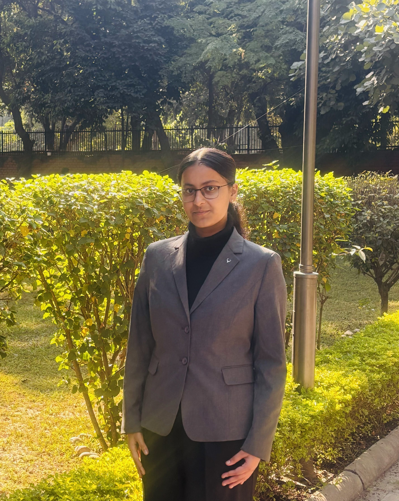

Team
Started by one, open to many.
Digital Disha began as a one-woman army, built with a laptop, a plan, a classroom, and a belief that practical digital learning should reach students beyond the cities too. Now, the goal is to grow it into a small but serious team of people who care about education, technology, and rural impact.

Founder
Keshika Verma: student, writer, coder, changemaker.
Keshika Verma is the founder of Digital Disha, a student-led digital literacy initiative shaped by her belief that technology becomes meaningful when it reaches real people.
A student, writer, and young builder from Himachal Pradesh, Keshika has worked across education, leadership, coding, public speaking, and social impact. She is also the author of The Last Enemy and co-founder of KeyZen, an AI-powered typing tutor inspired by her work with students.
Through Digital Disha, she brings together her love for technology and service, with the aim of helping students in less-connected communities take their first confident steps into the digital world.
Applications open
Join the people taking Digital Disha forward.
Digital Disha is growing. We are opening space for volunteers, mentors, designers, content creators, curriculum builders, outreach collaborators, and others who want to help bring practical digital learning to more classrooms.
Start here
Want to join or support Digital Disha?
Click on the button below and choose the role that fits you best. You do not need to know everything already! Just bring curiosity, commitment, and the willingness to build with purpose.